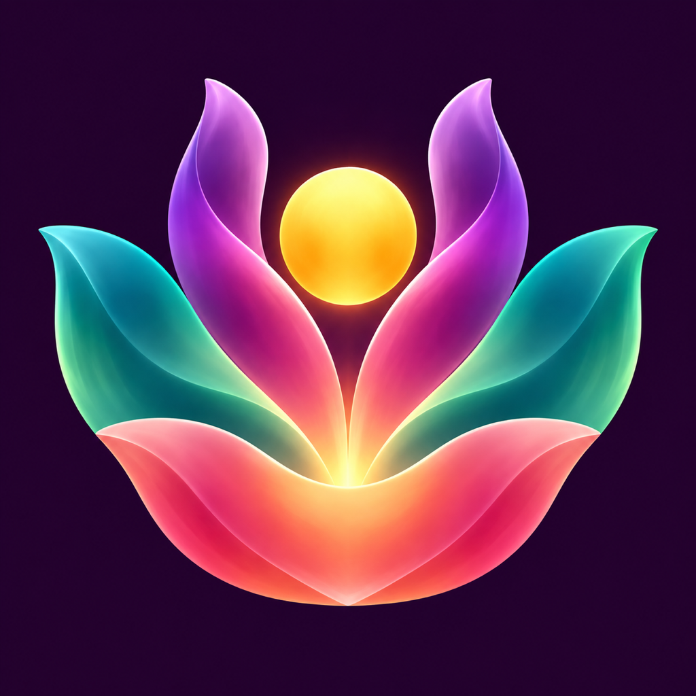

One visual language. A different rhythm for every screen.
Interactive design reference, not app screenshots. Native implementations use the same ink, mint, violet, typography and honest missing-data states. All plans stay free.
Guidance first. Thumb-reachable controls, compact biofeedback.
One task per page. Clear cues and a dedicated controls page.
Pose · Metrics · ControlsDigital Crown interaction stays explicit.
Local guided sessions, comfortable windows, native keyboard control.
Unwind with seated movement.8 poses · 12 minutes
Guided movement on Mac.No live Health measurements.
Sidebar to explore. Focused session canvas, with metrics beside the instruction.
Legible pose guidance, restrained spatial depth, optional immersion.
Large instruction, measured focus states, remote-friendly navigation.
Approved artwork, preserved across the family. Mac exports use native pixel sizes; TV and Vision layered delivery still require SDK validation.
Mint invites action. Violet identifies SCI. Pink marks pause or ending. Every state also has a readable label.
No invented readings, completed rings or zeros. An em dash preserves trust. Sample values in this reference are explicitly illustrative.
Scroll at smaller sizes, retain readable text, expose controls, and honour reduced motion. No decorative animation is required to understand a session.